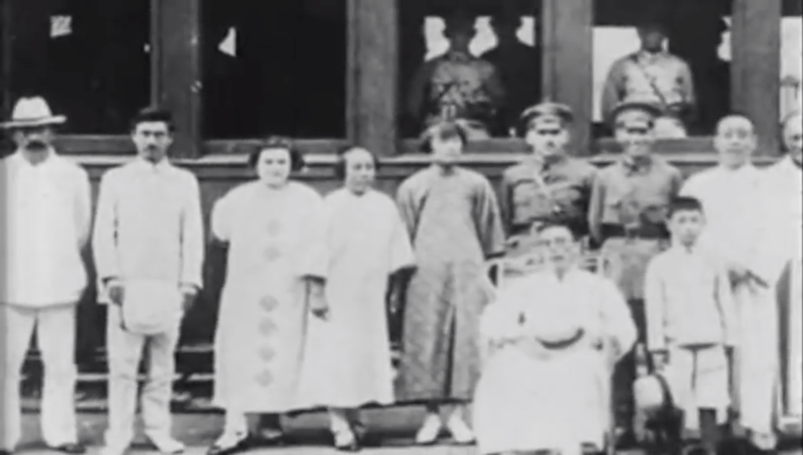
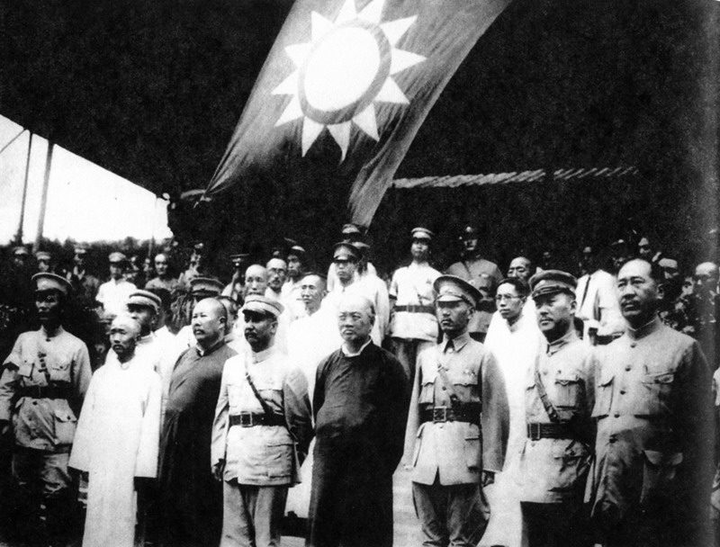

《Map of East Central China》，1928年3月15日，NARA 76028917。美国海军陆战队官方工作，Commons标注Public Domain／No Copyright—United States。实际下载原图11000×13688，SHA256及规范Original链接见资产收据。观看版为等比例缩小，不改地图形状。
Commons许可 · NARA档案。底图是1928年的历史材料，早期章节不把其边界当作当年政治控制。图上交通线不作为已核实运营线路清单；粤汉铁路当时未贯通。
城市标签按扫描图印刷城市点人工定位。现代中心经纬度仅作相对方位检查，没有按现代坐标线性贴图。彩色折线是城市间主要推进方向，不是营地、精确路径、速度、占领区或实际渡河点。
第一集团军：徐州及苏北向鲁南、泰安、济南，济南事变后绕城北进。第二集团军拆成豫北京汉与鲁西两路。第三集团军拆成晋北京绥与晋中正太两路。第四集团军以汉口、漯河／许昌向华北分批增援表示，不能理解为同一时间占领全线。太原在石家庄西侧；大同、张家口在北京西北；济南在石家庄东南；汉口在郑州南偏东。
方向说明来自父任务提供的冯、白1928报告网络转录，称引《中华民国史档案资料汇编》第5辑第1编（1994），原扫描件尚未核阅。转录存在“四月三十一日”等错误，不能据此制作精确日序。冯报告转录、白报告转录、《北洋军阀史》转录交叉线索。

蒋介石准备离开广州北伐，Commons日期1926年7月9日。作者不详，来源《China: The Roots of Madness》，Commons按PD-China／PD-US-expired标注公有领域。只用于1926章，不作为1928四军起点。原图与许可。

1928年7月6日，国民政府领袖在北京碧云寺举行祭祀。国民政府照片，Commons标注PD-ROC-oldphoto。多人照片，不冒称四位统帅同框；不逐人推断未核实身份。原图、日期与许可。
此公开站保留83节点的发生、背景、后续与辨析，以及全部53条历史引用的状态；原始Library附件及开发材料没有公开。旧53引用不等于本次全部独立核验。父任务核验补充另存，不能用运动或技术通过代替史实核验。1928东北易帜画政治承认，不画北伐军攻到沈阳。1930年9月18日停战通电、随后入关和10—11月战争收束分开。
武汉三镇已按1600×1900高清局部图的城市符号中心重新校准，引线用圆点收束。其他手工城市点仍为近似定位；支线、实际渡点和具体部队日序尚未精确核验。无全省填色控制区、无相似度百分比。
三镇日期：S12明确汉阳9月6日、汉口9月7日、武昌10月10日；S11支持月份和武昌日期。S15支持南京4月18日与武汉并立。S20同期报告支持晋军6月8日入京，并提及白崇禧带武汉部队随后进入华北。S35明确财政集中为编遣方案，不能画成已经统一。
S28同期报告区分1930年9月18日通电、19日首批乘车、22日先头抵北平；S29与S30支持10—11月收束及地方军事体系仍在。S48的d19只谈顾维钧及东北态度，不能作为北平政府成立的直接证据。动态图版e081撤下S48，改用S28；原附件保存不变。FRUS1927 d7中的李大钊4月25日为同期误报，不采纳；该人物准确日期需使用专门来源。
逐条来源状态与证据边界 · 本轮核阅记录。核阅有范围，不能将一页部分可靠事实推广为所有陈述可靠。例如S12南京入城23日与同期报告24日不同，图版南京事件采用同期报告24日。
全片53分17.9秒，保留83段原配音与画布内字幕，新增章节配乐与音效。42项历史引用未逐条独立核验，5项旧声音差异继续保留；本次混音通过不改变这些历史状态。